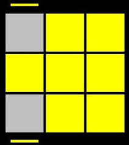

After completing F2L the first two layers of the cube will be solved. The OLL algorithms are used to orient all the pieces of the last year.After completing the OLL part only the permutation of the last layer remains. One Look OLL contains 57 algorithms but in this section of 2 Look OLL we will see only seven of them. By doing proper repeatition of these algorithms on proper cases our desired output can be achieved.
Case 1: R U R' U R U2 R' Case 2: R U2 R' U' R U' R' Case 3: F (R U R' U')*3 F' Case 4: R U2 R2 U' R2 U' R2 U2 R Case 5: R2 D R' U2 R D' R' U2 R' Case 6: r U R' U' r' F R F'  Case 7: y F' r U R' U' r' F R